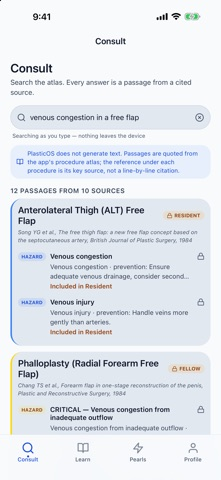
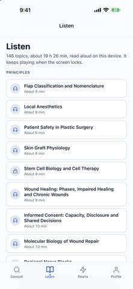
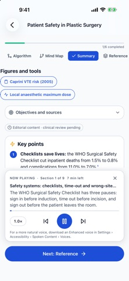

Asistanlar için
Konu tekrarı, açıklamalı sorular ve aralıklı tekrar ile çalışma oturumunuza dönün.
PlasticOS
Asistanlar, uzmanlar ve akademisyenler için konu, prosedür atlası ve soru pratiği. Önce ücretsiz içeriği inceleyin; ihtiyacınıza uygun kapsamı uygulamada seçin.
iPhone • Ayrı hesap gerekmez • Tam içerik uygulama içi satın alma gerektirir
Eğitim amaçlıdır; hasta bakımında kullanılmaz.

Consult, mevcut atlas içeriğinde arar. Resident ve Fellow işaretleri içerik erişimini gösterir.

Konu listesinden uygulama içindeki sesli çalışma akışını açın. Görselde İngilizce içerik gösterilir.

Özet, referans ve ses kontrolleri aynı çalışma akışındadır. Eğitim içindir; hasta bakımına yönelik karar aracı değildir.
App Store’da yayımlı 1.5.4 sürümünün İngilizce örnek ekranlarıdır. Mobilde yana kaydırabilirsiniz. Ücretli içerik kilitleri gösterilir; tüm içerik ücretsiz değildir. Tercih ettiğiniz dilde bir konuyu satın almadan önce uygulamada inceleyin.
Konu tekrarı, açıklamalı sorular ve aralıklı tekrar ile çalışma oturumunuza dönün.
Prosedür atlasında ilgili pasajı bulun; mevcut referanslarla bilgiyi yeniden inceleyin.
Ders ve tartışma hazırlığında mevcut konu, atlas ve sorular arasında çalışın.
İlk adım: ücretsiz PGY-1 temel konularından birini açın. Daha geniş konu ve prosedür kapsamına ihtiyaç duyduğunuzda planları karşılaştırın.
Consult mevcut uygulama içeriğinde arar; hastaya özel yanıt üretmez ve canlı literatür taraması değildir.
146 konu · 86 prosedür · 2.207 soru
Erişim seçtiğiniz plana bağlıdır.
PGY-1 temel içerikleri, üç temel prosedür ve aralıklı tekrar ile iş akışını deneyin.
Aylık veya yıllık abonelikle daha geniş konu ve prosedür kapsamı.
Resident kapsamına ek ileri konular ve prosedürler.
Fellow erişimi için tek seferlik satın alma.
Güncel fiyat, dönem, yenileme koşulları ve varsa deneme uygunluğu Apple satın alma ekranında, onaydan önce gösterilir.
Eğitim amaçlıdır. Hasta bakımında karar vermek için kullanılmaz; klinik değerlendirme veya uzman gözetiminin yerini almaz.
Türkçe konu çevirileri bulunur; tercih ettiğiniz dilde bir konuyu satın almadan önce deneyin.
TPRECD48 dönemi için bağımsız ürün tanıtımıdır. Kurultay, dernek veya otelle resmî ortaklık ya da onay iddiası yoktur.